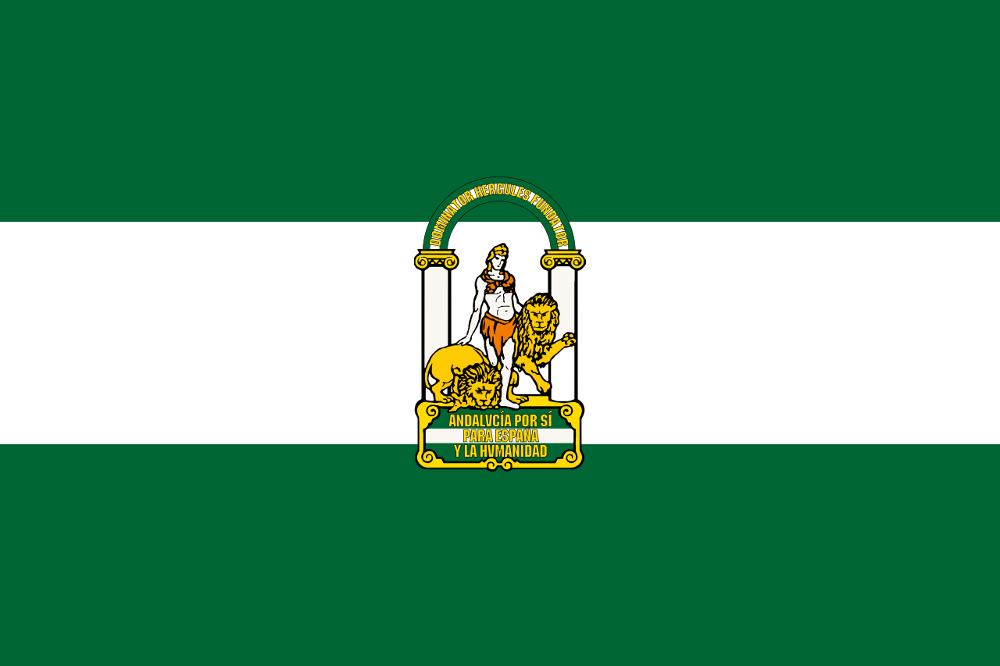

INTRODUCCIÓN A LA HISTORIA DE LAS BANDERAS
En esta web te doy acceso a la información sobre las banderas de Andalucía, España y Japón
Soy alumno del grupo 3ºESO C y esta web es fruto de una práctica de la materia de Computación y Robótica.
Puedes visitar el enlace a la información sobre las banderas en las pestañas del menu superior o en los links siguientes:
 Bandera de Andalucía Bandera de España y Japón
Bandera de España y Japón